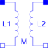
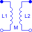

TransformerTransformer with two ports |

|
Information
This information is part of the Modelica Standard Library maintained by the Modelica Association.
The transformer is a two port. The left port voltage v1, left port current i1, right port voltage v2 and right port current i2 are connected by the following relation:
| v1 | | L1 M | | i1' | | | = | | | | | v2 | | M L2 | | i2' |
L1, L2, and M are the primary, secondary, and coupling inductances respectively.
Parameters (3)
| L1 |
Value: Type: Inductance (H) Description: Primary inductance |
|---|---|
| L2 |
Value: Type: Inductance (H) Description: Secondary inductance |
| M |
Value: Type: Inductance (H) Description: Coupling inductance |
Connectors (4)
| p1 |
Type: PositivePin Description: Positive electrical pin of port 1 |
|
|---|---|---|
| n1 |
Type: NegativePin Description: Negative electrical pin of port 1 |
|
| p2 |
Type: PositivePin Description: Positive electrical pin of port 2 |
|
| n2 |
Type: NegativePin Description: Negative electrical pin of port 2 |
Used in Examples (1)
|
Modelica.Electrical.Analog.Examples Transformer circuit to show the magnetization facilities |
Used in Components (1)
|  |
Modelica.Electrical.Polyphase.Basic Polyphase Transformer |